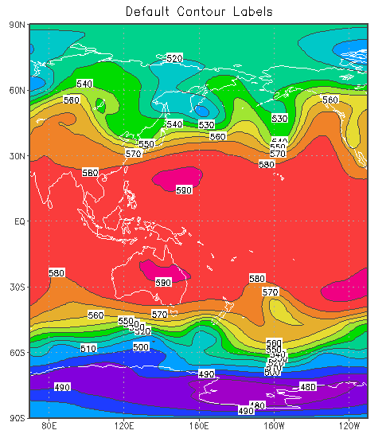
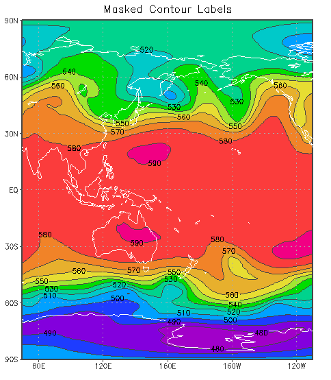

set clab option
Controls contour labeling. The option
argument may be one of the following:
on 'fast' contour labels are plotted where the contour lines are horizontal off no contour labels forced an attempt is made to label all contour lines format gives a C-language template for conversion of the contour value to a string masked (version 2.0.a6+) contour lines have gaps for the labels, so rectangles for label background are not drawn; contour labels never overlap.
'set clab masked' is used, the contour lines are masked out wherever the labels are drawn. The mask creates small gaps in the contour lines, so the labels can be read clearly without the small rectangles that are usually drawn behind the contour label. The mask also ensures that labels do not overlap. If additional contour plots are overlaid, the new labels do not interfere with labels already drawn. The end result is a less cluttered graphic that is much more legible.
'set clab masked' is used, you can defer drawing the map until after all the labeled contours have been drawn, and then the label mask will also create gaps in the map outine for ultimate contour label legibility.
'clear mask' command resets the contour label mask.
set clab %.2f
set clab %.0f`3.`1C 'set clab masked' in a display containing shaded contours and an overlay of labeled line contours. The default behavior is shown on the left; masked contour labels are shown on the right. The script fragments used to draw the plots are also provided below the images. Observe that contour lines and coastal boundaries are not drawn underneath the masked labels, so the white rectangles are not needed as a background. In addition, the masked labels do not overlap, making all of them legible. |  |  |
|
|